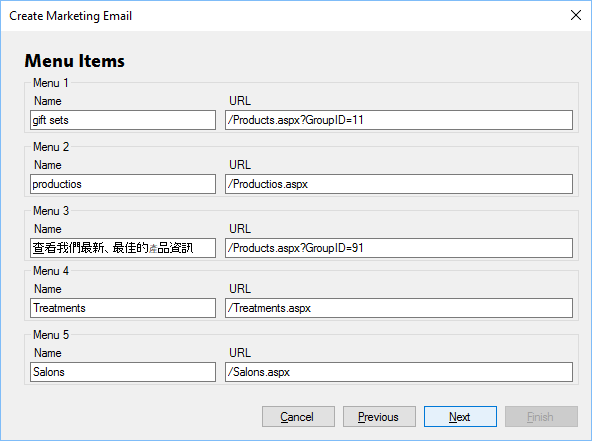

Menu Items
Previous
Top
Next
If the email has menu items you can specify them on this page.

The URLs work the same as described in the Landing Page section. You can specify any name you wish in any language, as shown above.